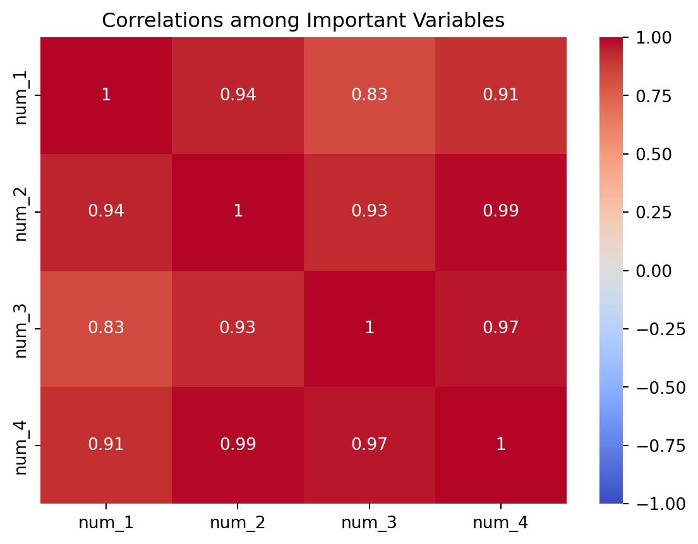

This note uses the synthetic dataset minidataset.csv to demonstrate essential data-processing and EDA operations. The dataset contains repeated measurements from several individuals, each with up to three visits. Each row represents one visit for one individual.
This note provides brief examples rather than comprehensive instructions for each command. If you choose to use a command in your project, consult its documentation and make sure you apply it appropriately to your data and analysis.
E.1 Load and inspect the data
import pandas as pddf = pd.read_csv("minidataset.csv")df.head()
id
visit
time
num_1
cat_1
num_2
num_3
num_4
cat_2
num_5
cat_3
target
0
1001
1
0
45
F
118
23.8
188.0
0
0
0
0
1
1001
2
2130
51
F
122
24.1
194.0
0
0
0
0
2
1001
3
4280
57
F
126
24.5
201.0
0
0
0
0
3
1002
1
0
52
M
132
27.4
221.0
1
15
0
0
4
1002
2
2085
58
M
138
28.0
229.0
1
12
0
0
The variable id identifies the individual, visit records the visit number, and time records the number of days since baseline.
The examples above show simple approaches to missing-value imputation. A more complete, cross-validation-safe approach typically combines a sklearn imputer with ColumnTransformer and Pipeline, so that imputation is fitted separately within each training fold and applied consistently to other data. The details of this approach are beyond the scope of this note.
E.5 Construct features
Sort by individual and time before calculating within-person differences:
import seaborn as snsimport matplotlib.pyplot as pltsns.heatmap(df[important_num].corr(), annot=True, cmap="coolwarm", vmin=-1, vmax=1)plt.title("Correlations among Important Variables");

Choose only the summaries and plots that support the project narrative or motivate later modeling decisions.